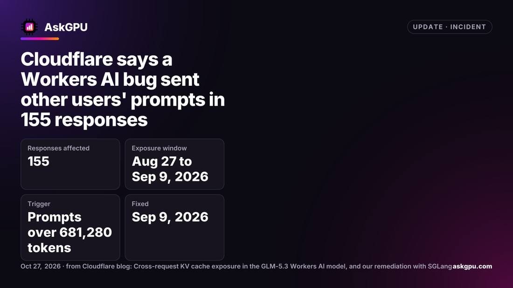

Inside 155 Responses Was Other Customers' Data
Cloudflare disclosed on October 26, 2026 that the GLM-5.3 model on Workers AI mixed other customers' prompts and partial generated content into 155 responses between August 27 and September 9, caused by a cache pool smaller than the context window combined with an SGLang engine bug.

- 01THE LAUNCH — August 27, 2026: GLM-5.3 launches with a cache pool smaller than its window.
- 02THE BUG — Extra-long prompts are rejected, yet the engine keeps executing them.
- 03THE FIX — September 8, 2026: a researcher reports it; the model is taken offline and fixed the next day.
WHAT HAPPENEDWhat Happened
The failure began on August 27, 2026. When GLM-5.3 launched, its context window was labelled at 1,048,576 tokens, but the prefill KV cache pool held only 681,280 tokens. Any extra-long prompt exceeding the cache pool took the failure path, even if it sat within the advertised context window.
The second fault came from the SGLang inference engine. Extra-long prompts were marked as rejected and replaced with a one-token placeholder, but the admission queue for disaggregated inference did not treat them as rejected and kept executing. Decode nodes reserved cache pages for the full prompt yet received only one page of real data; the remaining pages still held stale data from earlier requests.
The result: 155 responses mixed in other customers' prompts and partial generated content, all returned with HTTP 200 and looking like normal answers. Every affected prompt exceeded 681,280 tokens; prompts of ordinary length were out of scope.
TWO FAULTS, ONE LEAKEither Fault Alone Would Not Have Caused a Leak
A cache pool smaller than the context window, on its own, would only make extra-long prompts error out. The engine's rejection-handling bug, on its own, would only surface on extra-long requests. Stacked together, the error path became a normal return, and stale data flowed through the cache pages into new responses.
Cloudflare concedes it knew about the capacity mismatch before launch, but internal tests returning HTTP 200 masked the problem. The tests checked status codes, not whether the returned content belonged to the request being tested.
THE CACHE AS ISOLATIONIn Shared Inference Infrastructure, the Isolation Boundary Sits in the Cache Layer
Large-model inference services run multiple customers' requests on the same batch of GPUs, and reusing cache pages is a performance design. If pages are not cleared, isolation rests entirely on the engine's ownership tracking. Once tracking fails, isolation fails with it.
The lesson is not Cloudflare's alone. Any self-hosted SGLang deployment using disaggregated prefill and decode should check its cache pool size and engine version; Cloudflare recommends upgrading to v0.5.22 or later.
THE DISCLOSURE CLOCKThe Disclosure Timeline Deserves as Much Attention as the Fault Itself
Researcher Gadi Evron reported the issue via HackerOne on September 8. Cloudflare reproduced it on September 9, took the model offline within 40 minutes, and restored it at 19:40 the same day. The full report was not published until October 26, coordinated with SGLang's fixed release.
The public report leaves two key questions unanswered: how many customers were actually affected, and whether each was notified. Anyone who used the model between August 27 and September 9 cannot tell from the report whether they were caught in it.
THE SHIFTWhat Changed
SIGNAL JUDGMENT — ANALYSISIf Cache Pages Are Not Cleared, Isolation Is a Sheet of Paper
Tokenta Signal's judgment is unchanged: in shared inference, the isolation boundary is not in the contract, it is in the ownership tracking of cache pages. Get the tracking wrong once, and customer data flows through stale pages into someone else's response.
WHAT REMAINS UNCERTAINWhat Remains Uncertain
EVIDENCEEvidence
The original report confirms Cloudflare disclosed on October 26, 2026 that GLM-5.3 on Workers AI mixed other customers' data into 155 responses between August 27 and September 9, with all prompts exceeding 681,280 tokens.
PRIMARY SOURCESPrimary Sources
- AskGPU: Cloudflare says a Workers AI bug sent other users' prompts in 155 responses
https://askgpu.com/updates/cloudflare-workers-ai-glm-5-3-leaked-other-users-prompts/ - DigiSoulHub: Workers AI answers contained other customers' data
https://digisoulhub.com/blog/workers-ai-kv-cache-exposure/